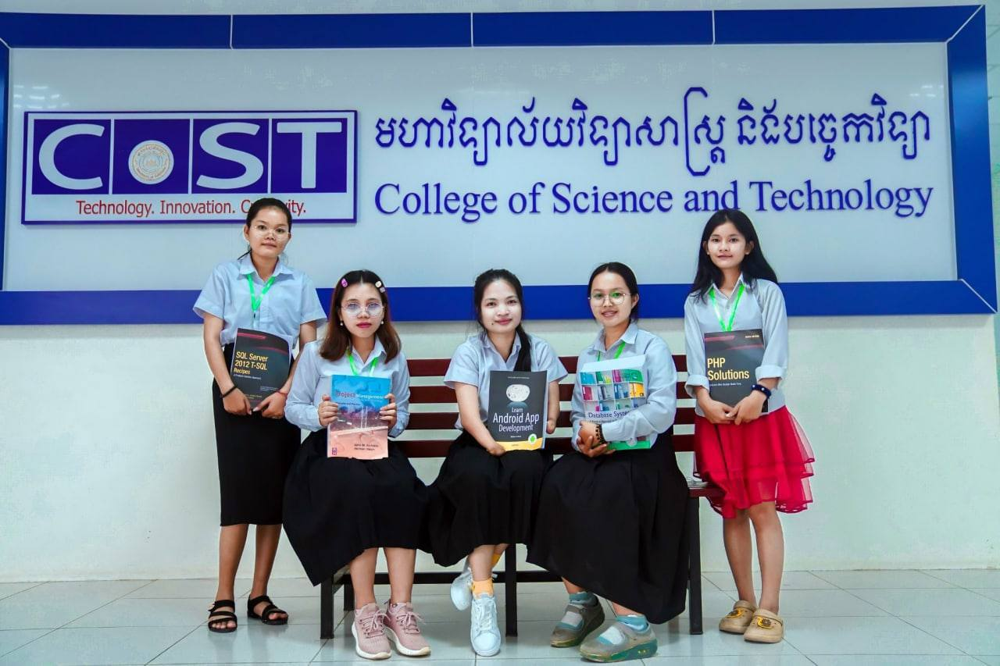

College Science and Technology
College Science and Technology
Visit College Science and Technolo
- 1. Information Technology
- 2.Computer Science
- 3 Electronics and Telecommunication
- 4 Graphic Design and Multimedia
- 5 Business Information Technology
- 6 Network Engineeringand Cybersecurity
- 7 AI and Data Science
>
Dean's Message Information On behalf of faculty members and staff of the College of Science and Technology I would like to welcome you to the College of Science and Technology at The University of Cambodia. The College of Science and Technology (CoST) was established at the same time as the The University of Cambodia in 2013.Bbhe College have been developed and transforms with the rise of Science and technology in the 21st century. We drive and inspire our students to value creativity and innovation in the information technology world. The college offers undergraduate and graduate programs such as Computer Science, Information Technology and Electronics and Telecommunication. Our programs prepare students for careers in these disciplines as scientific and ICT professional. In order to meet increasing demand for graduates in computer science and information technology, we have: developed robust and modern curricula; established sophisticated facilities; and hired high qual...
computer lap
